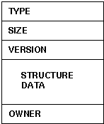
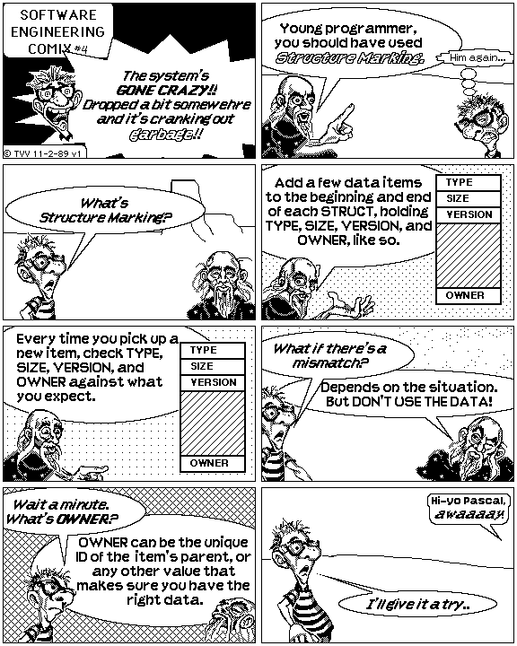

1995-06-14
Structure marking is a programming technique that defends data against damage, especially from software bugs. It adds flags to data structures and checks them at each use to detect damaged data immediately.
Index terms--Error detection, robust data structures, software fault tolerance, file systems.
Various applications have taken ad hoc approaches to redundant data storage and data recovery, including telephony systems[1] and IBM's OS/VS-2 release 2[2]. Theoretical studies have calculated detectability and correctability for various structures and estimated the space and time cost of protecting and repairing data[3,4].
Structure marking is an ad hoc technique used in the Multics[5] file system. It provides many of the benefits of the academic approaches at nominal cost.
This section explains how to apply structure marking to data structures and the programs that maintain them.
To use structure marking, declare data items TYPE, SIZE, VERSION and OWNER in every data structure, defined as follows:
Place OWNER at the end of the structure and TYPE, SIZE, and VERSION at the beginning. If the environment does not provide standard unique IDs, use the least significant bits of a clock reading for OWNER; the important idea is that it not be a function of the record contents.

Don't use common values like zero or one for TYPE and VERSION values.
Check all four elements before using a new structure instance: for main storage, this is whenever a pointer or index item changes; for disk records, it is whenever a record is read in. If any check fails, the data structure is damaged, and your program can't continue safely. The checking is easy to code: it looks like this:
if (s.type != Stype || s.size != Ssize || s.version != Sversion3 || s.owner != m.uid) badS (sptr);
If the structure's size varies, use SIZE (after range checking) to find OWNER.
Structure checks like these are easy to implement and fast. Checking the form of data (e.g., "Is the name composed of legal characters?") or data content (e.g., "Is the file name unique?") is much slower and more complex.
Augment list structure head pointers by a count of the number of items in the list. Check TYPE, SIZE, VERSION, and OWNER as you get each list item; count steps and stop when you've taken more steps than there are items on the list, to detect looped lists. For example, code to search a list looks like this:
n = list.head.nentries;
p = list.head;
found = False;
while ((p != NIL) &&
(!found) && (n > 0)) {
/* check entry as above */
if (p -> x.name == arg) {
found = True
}
else {
p = p -> x.next;
n = n - 1;
}
}
if (n <= 0) badL (list);
Define VERSION numbers by a literal in the source for each data structure definition, and set the structure value from the literal:
s.version = S_Version_3;
When you create a new structure version, define a new literal for S_Version_4. Modify places where the old literal is referenced to handle the new structure or to handle old or new depending on the value of VERSION.
For procedure calls that return complex structures, make VERSION an input argument, meaning "return a version N value." Obtain the actual value passed from a literal. If the return value has variable-sized parts, mark them with at least TYPE and SIZE.
Structure marking ensures that a pointer or index points to a valid main storage structure before the object is used. Garbage pointers or indices might cause a machine fault when the check is executed, so check locator values for validity before use, or provide a fault handler that will catch such machine faults and treat them as if the structure check failed.
When structure checks detect damage, the program action to take depends on the environment. Some (non-orthogonal) possibilities are:
Repair the damaged structure. Use a repair procedure or salvager to rebuild the structure from redundant information, or reload it from a backup. When this can be done, the caller only notices a delay in responding to the request. (This is how the Multics file system handles damaged file directory entries.)
Place the damaged structures out of service. Defer repair or replacement of the damaged object. (Multics does this when a volume's bit map is damaged.)
Discard the damaged structure. This makes sense in environments like a message system that re-sends lost packets.
Return an error. This exports recovery complexity into all the callers, and allows inconsistent behavior by different callers. It is still better than continuing with garbage input.
Abort processing. If the environment provides transaction services, cause a rollback to a valid state before processing started. This strategy only handles errors introduced during the scope of a transaction.
Halt, expecting a subsequent reload or repair. This tactic is often chosen during debugging.
Structure marking was added to the Multics file system in 1977. Directories and their substructures contain TYPE, SIZE, VERSION, and OWNER. Each directory is owned by its parent directory; file entries are owned by their containing directory; names and access control lists (ACLs) are owned by their entry; and ACL entries are owned by their ACL. List counters are kept for the number of entries, number of names on an entry, and number of ACL entries on an ACL.
When structure marking checks detect errors in a Multics directory entry, the file system invokes a salvager to rebuild the entire directory, and then retries the user's call. Address faults in the file system with a directory locked also salvage the directory.
Before this improvement, Multics systems salvaged every directory after a system crash; it took hours on a system with many disk volumes. Almost all this time was wasted, since most crashes didn't damage any directory.
With structure marking, a Multics system simply restarts after a crash. Damaged directories are repaired automatically before use.
Introducing structure marking improved system reliability noticeably. Standard benchmarks showed no measurable performance cost; space cost was a few percent. We considered storing a checksum for each structure, but there were not enough cases where structure was good but contents were damaged, to justify the additional cost of computing it.
Structure marking's redundant information defines additional invariants for code that accesses a structure. The checking code ensures that the invariants hold, and thus reduces the number of possible program states downstream from the checks.
Structure marking defends against:
Damage that turns data into garbage without regard to the structure of the data, such as wild stores, disk decay, or overwriting of physical containers. TYPE and OWNER checking catches these problems unless the garbage happens to match expected values; the more redundant information used, the less chance of accepting garbage as good data.
Programming errors. TYPE and OWNER checking detect logic errors, incorrect calls, using data after freeing it, and wrong pointer and list operations. Typographical errors and mental lapses become hard failures.
System integration errors. SIZE and VERSION checking notice cases where programs are unprepared to handle the data they are passed.
These checks hide "expected, undesirable" events[6] from software that can proceed as if these kinds of damage never happen.
Structure checks are not so good for:
Design errors. A wrong algorithm can produce perfect structure with incorrect contents. Content-level checking is needed to catch errors like this.
Errors in the tools. A compiler bug may introduce corresponding errors in both mainline code and structure checks.
Separating structure checks from content checks leads to a code organization that is easy to maintain. The repair procedure for a marked data structure is simpler, faster, and better organized by using the marking items.
Several questions are often asked about this technique.
Will structure marking checks slow a program down? The cost of repeatedly checking for a "can't happen" situation offends some programmers. In fact, there are few cases where performance is so critical, or space so tight, that structure marking can't be used. The cost of recovering from a single major system failure is often much more than the cost of checking for hundreds of years. And "can't happen" events DO happen: disk contents are rarely corrupted, but rarely doesn't mean never.
Is it non-modular? Distributing the checks to all the places where a new structure is made current worries some programmers; it appears to make all parts of the system more complex by introducing many new control paths and decisions. Some of this appearance is illusory: using unchecked data might cause a fault and cause control to branch. Use language features such as DEFINEs and module packaging to implement the structure checks in a stylized way that minimizes the chances for a typographical error in the checking code.
Can it catch every error? There are some kinds of structure damage that structure checks won't catch. For example, a damaged pointer could point to garbage that happened to look valid, or the structure could be altered by a wild store just after the check. There is a very small probability that the data will be wrong despite checking. Instead of "We assume this record is OK to use because the pointer points to it," we have "We assume this record is OK to use because the pointer points to it AND it looks like a valid record."
Bernard Greenberg, Steve Webber, Bob Mullen, and Andrew Kobziar were among the many members of the Multics team who helped refine the original idea of structure marking.
[1] R. P. Almquist, J. R. Hagerman, R. J. Hass, R. W. Peterson, and S. L. Stevens, "Software Protection in No. 1 ESS," Proc. Int. Switching Symp., 1972, pp 565-569.
[2] Alan L. Scherr, "The Design of OS/VS2 Release 2," Proc. Nat. Computing Conf., 1973, pp 387-394.
[3] D. J. Taylor, D. E. Morgan, and J. P. Black, "Redundancy in Data Structures: Improving Software Fault Tolerance," IEEE Trans. on Software Engineering, Volume SE-6, number 6, November 1980, pp 585-594.
[4] S. C. Seth and R. Muraldihar, "Analysis and Design of Robust Data Structures," Proc. FTCS, 1985, pp 14-19.
[5] Honeywell, Multics Storage System Program Logic Manual, Order no. AN61, 1975.
[6] B. W. Lampson and H. Sturgis, "Crash Recovery in a Distributed File System," Technical report, Computer Science Laboratory, Xerox, Palo Alto Research Center, 1976.

Copyright (c) 1995 by Tom Van Vleck